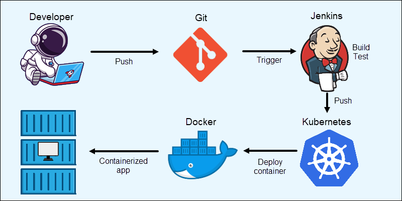

Kubernetes usage
Kubernetes can help you deliver and manage containerized, legacy, and cloud-native apps, as well as those being refactored into microservices.
In order to meet changing business needs, your development team needs to be able to rapidly build new applications and services. Cloud-native development starts with microservices in containers, which enables faster development and makes it easier to transform and optimize existing applications.
Application development with Kubernetes
Production apps span multiple containers, and those containers must be deployed across multiple server hosts. Kubernetes gives you the orchestration and management capabilities required to deploy containers, at scale, for these workloads.
Kubernetes orchestration allows you to build application services that span multiple containers, schedule those containers across a cluster, scale those containers, and manage the health of those containers over time. With Kubernetes you can take effective steps toward better IT security.
Kubernetes also needs to integrate with networking, storage, security, telemetry, and other services to provide a comprehensive container infrastructure.
Once you scale this to a production environment and multiple applications, it's clear that you need multiple, colocated containers working together to deliver the individual services.
Linux containers give your microservice-based apps an ideal application deployment unit and self-contained execution environment. And microservices in containers make it easier to orchestrate services, including storage, networking, and security.

For more info